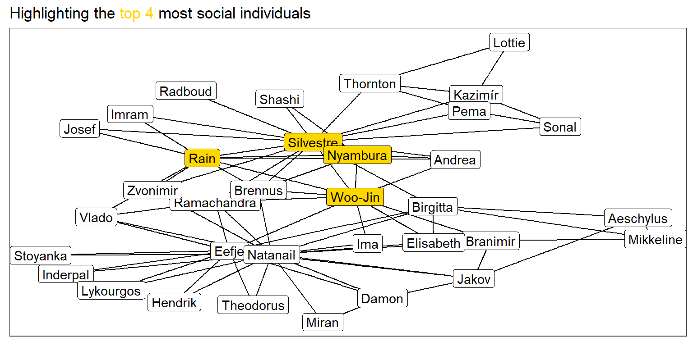

Applied Data Science: Communication and Visualisation - Project 1.2
Author
Amun Stalder
Published
April 26, 2024
Introduction
As part of the Applied Data Science: Communication and Visualisation course for the Certificate of Open Studies (COS) of the EPFL, the students show their aquired skills in small data science projects. This Markdown file is about the analysis of network data set.
Analysing the data
Tesk 1: Loading the data and inspecting a first graph
Firstly, we load the data using the {readr} package. We make an initial data-wrangling in order to bring it in a useful format for network analysis
library(readxl)library(dplyr)library(tidygraph)library(ggplot2)library(ggraph)library(ggthemes)theme_set(theme_bw())df_edges <-read_excel("data/network_data.xlsx", sheet ="edges")df_nodes <-read_excel("data/network_data.xlsx", sheet ="nodes")twiddle_data <-tbl_graph(nodes = df_nodes,edges = df_edges)ggraph(twiddle_data, layout ="igraph", algorithm ="kk") +geom_edge_link() +geom_node_label(mapping =aes(label = name)) +labs(title ="A Visualization of a social network" )
Task 3: Highlighting top 4 social People with most interactions.
library(stringr)library(ggtext)
Warning: Paket 'ggtext' wurde unter R Version 4.3.3 erstellt
# Generating two dfs having count of id for edgesdf_edges_count_to <- df_edges %>%count(to) %>%rename(count_to = n)df_edges_count_from <- df_edges %>%count(from) %>%rename(count_from = n)df_nodes_firstname_counts <- df_nodes_firstname %>%left_join(df_edges_count_to, join_by(id == to)) %>%left_join(df_edges_count_from, join_by(id == from)) %>%rowwise() %>%mutate(count_sum =sum(count_to, count_from, na.rm =TRUE)) %>%arrange(desc(count_sum)) %>%group_by(99) %>%mutate(rn =row_number(),top_4 =ifelse(between(rn,1,4), TRUE, FALSE) ) %>%ungroup()# to display in text below the 4 most social individualstop_4_string <- df_nodes_firstname_counts %>%filter(top_4) %>%mutate(name_num =paste0(name, " (", count_sum, "), ")) %>%group_by(99) %>%summarize(string =paste0(name_num, collapse ="")) %>%pull(string)twiddle_data_firstname_counts <-tbl_graph(nodes = df_nodes_firstname_counts,edges = df_edges )ggraph(twiddle_data_firstname_counts, layout ="igraph", algorithm ="kk") +geom_edge_link() +geom_node_label(mapping =aes(label = firstname, fill = top_4)) +labs(title ="Highlighting the <span style='color:gold'>top 4</span> most social individuals" ) +scale_fill_manual(values =c("TRUE"="gold", "FALSE"="white") ) +theme(plot.title =element_markdown(),legend.position ="none" )

The 4 most social People are Silvestre Molina (17), Rain Lemmi (16), Woo-Jin Tosetti (12), Nyambura Fischer (10), with the number of interactions in brackets.
Task 4: Only showing names of 4 most interactive people